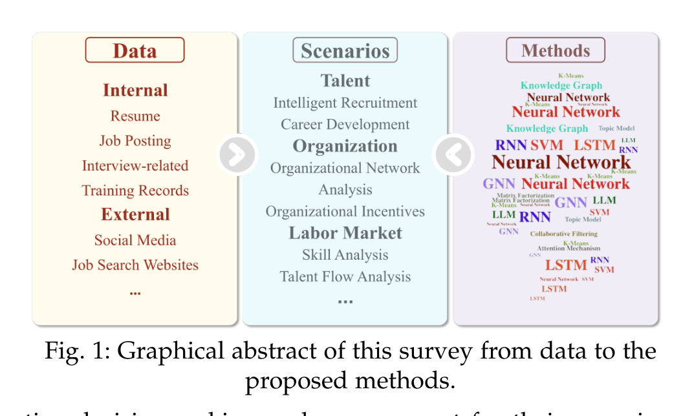
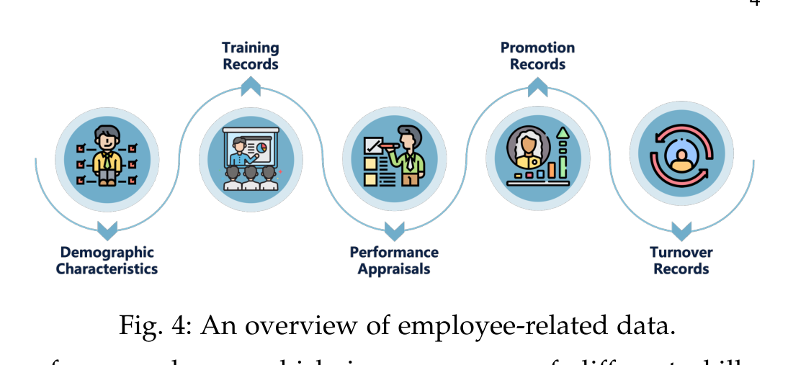
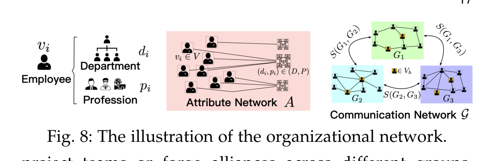
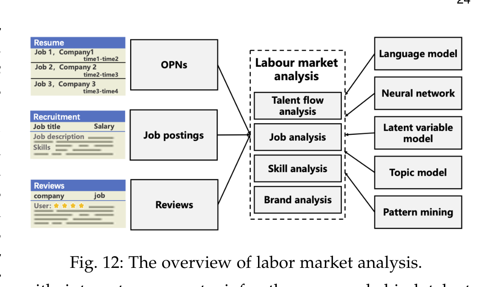
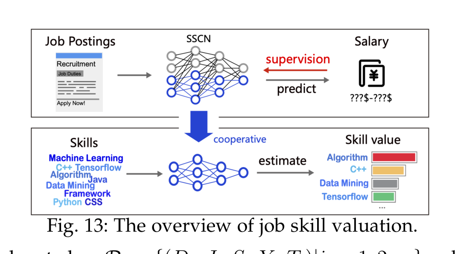
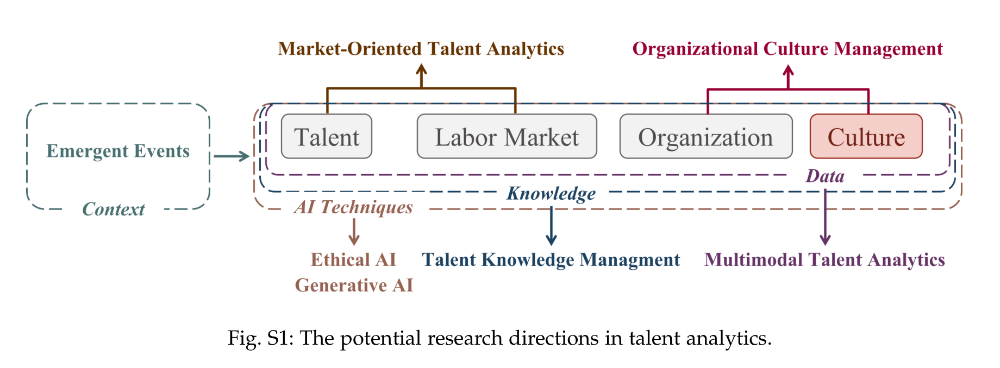

AI 进入 HR，不只是自动筛简历：一张人才分析的全景地图
Loading...
PAPER
CODE
AUTHORS
-
KEYWORDS
-
TL;DR
这篇综述把 AI for Talent Analytics 系统拆成数据、人才管理、组织管理、劳动力市场和未来挑战五层。它的价值不是提出新模型，而是帮读者看清：HR 场景里真正困难的不是“能不能建模”，而是数据敏感、目标主观、反馈稀缺和公平风险。
论文基本信息
- 论文链接：arXiv 2307.03195v3
- 代码链接：未在 PDF 中提取到
- 作者团队：Chuan Qin, Le Zhang, Yihang Cheng, Rui Zha, Dazhong Shen, Qi Zhang, Xi Chen, Ying Sun, Chen Zhu, Hengshu Zhu, Hui Xiong；Chinese Academy of Sciences, Baidu Inc., University of Science and Technology of China, Nanjing University of Aeronautics and Astronautics, Shanghai Artificial Intelligence Laboratory, The Hong Kong University of Science and Technology 等
- 关键词：人才分析、People Analytics、人力资源管理、劳动力市场、负责任 AI
这篇综述关心的不是“HR 自动化”，而是决策如何数据化
论文开场把 Talent Analytics 放在一个很现实的背景里：VUCA 环境下，企业对招聘、培养、留任、组织稳定、薪酬和市场竞争的判断越来越难靠经验完成。AI 的切入点不是替 HR 做一个单点工具，而是让人才相关决策从人工经验、问卷和静态报表，转向更实时、更细粒度的数据建模。
作者给出的总框架很清楚：先看数据，再看场景，最后看方法。数据包括内部的简历、职位、面试、培训、员工画像、组织关系，也包括外部的社交媒体、招聘网站和 Online Professional Networks；场景分为 Talent、Organization、Labor Market；方法则从 SVM、RNN、LSTM、GNN 到 Knowledge Graph、LLM。

这个图也暴露了论文的基本立场：人才分析不是一个单任务领域，而是一个由多源数据和多层级管理问题交织起来的应用科学。它横跨个人、团队、组织和市场，任何只盯着“简历匹配”的理解都太窄了。
数据是这门学科的地基，也是最大的麻烦
论文先花大量篇幅梳理数据，因为在 HR 场景里，模型能力往往不是第一瓶颈。内部数据分为招聘数据、员工数据和组织数据：招聘侧有 resume、job posting、interview-related data；员工侧有 demographics、training records、performance appraisals、promotion records、turnover records；组织侧有 reporting lines、in-firm social network、外部社交和招聘平台数据。

这类数据的特点是业务价值高，但公开性差。论文反复强调，简历、面试、绩效、晋升和离职记录都高度敏感，导致公开 benchmark 稀缺。很多研究依赖企业私有数据，这让任务定义、模型比较和可复现性都变得困难。
更麻烦的是，HR 数据天然带有历史偏见。晋升、面试分数、绩效评价常常来自主管或面试官的主观判断，模型如果直接学习这些标签，很可能只是把旧决策中的偏见自动化。因此，这个领域的数据处理不只是清洗缺失值和重复项，还必须处理敏感属性、标签噪声、样本多样性和隐私保护。
人才管理：从招聘漏斗走向完整职业周期
Talent Management 是论文里最大的一块，覆盖招聘、评估和职业发展。招聘部分包括 job posting generation、resume understanding、talent searching 和 person-job fitting。这里的技术演化很典型：早期用规则、HMM、SVM、CRF 做信息抽取；后来转向 CNN、LSTM、BiLSTM-CRF、BERT、LayoutLM、多模态预训练模型；最近又开始讨论 LLM 在职位生成、简历解析和 PJF 中的作用。
其中 Person-Job Fit 是最核心的任务之一。它把职位描述和候选人简历作为输入，预测是否匹配，既可以服务企业端人才推荐，也可以服务求职者端职位推荐。论文指出，现代 PJF 模型已经不只看文本相似度，还会利用历史交互、用户行为、个性化偏好、知识图谱、GNN、强化学习和联邦学习。
但这个方向也最容易踩风险。很多 PJF 工作追求 Accuracy、F1、AUC、NDCG@N、Precision@N，却对可解释性、公平性和市场资源分配考虑不足。一个招聘推荐系统如果只优化点击或录用概率，可能会制造 Matching Scarcity Problem，让部分岗位或候选人长期得不到曝光。
人才评估部分则聚焦 interview question recommendation 和 assessment scoring。前者用知识图谱、主题模型、BERT、GCN 等帮助面试官设计问题；后者用文本、音频、视频、多模态特征预测候选人能力或 hireability。这里的伦理压力更直接：视频面试可能隐含性别、种族、年龄等敏感信息，删除结构化敏感字段并不能阻止模型从图像和声音中重新推断出来。
职业发展部分覆盖 course recommendation、promotion prediction、turnover prediction、job satisfaction prediction 和 career mobility prediction。论文对这些任务的一个共同判断是：AI 可以提高个体化发展建议和风险预测能力，但目前很多工作仍把问题切得太孤立，例如离职预测常忽略晋升、外部机会、突发事件和连续时间动态。
组织管理：AI 开始处理“人和人之间的结构”
如果说人才管理多是个人层面的预测，那么组织管理关心的是关系结构。论文把这一部分拆成三类：organizational network analysis、organizational stability analysis、organizational incentive analysis。

组织网络建模把员工、部门、岗位、沟通关系、汇报线和属性放进图结构里，常用于高潜人才识别、组织结构分析和下游人才管理。技术上，表示学习、GCN、RNN、community search 等都被纳入这个谱系。
组织稳定性分析则包括 team formation、team optimization 和 person-organization fit。这里的目标不只是找能力最强的人，而是找适合团队结构、协作成本和组织环境的人。论文强调，传统问卷式 P-O fit 依赖人工设计指标，而 AI 方法可以从组织网络和员工行为中动态抽取 person profile、organization profile 和 environment profile。
组织激励分析更接近薪酬和岗位体系，包括 job title benchmarking 和 job salary benchmarking。前者通过职位迁移网络、职位语义和图嵌入判断不同公司的职位层级是否可比；后者把职位、公司、地点、时间和技能需求结合起来预测薪酬，常见方法包括 matrix completion、latent factor model 和图学习。
这一部分最有价值的洞察是：组织管理不是简单的“员工画像预测”。组织里的很多问题本质是网络问题、匹配问题和动态系统问题。AI 能降低人工调研成本，但也会带来新的透明度问题：团队成员为什么被推荐加入，某个员工为什么被判断与组织不匹配，这些解释必须能被管理者和员工理解，而不是只停留在模型 attention 权重上。
劳动力市场：从公司内部视角扩展到外部竞争环境
论文第三个大场景是 Labor Market Analysis，它把视角从企业内部拉到外部市场。数据来源主要是 Online Professional Networks、job postings 和 reviews，对应任务包括 talent flow analysis、job analysis、skill analysis 和 brand analysis。

Talent flow analysis 用职业轨迹和公司间流动数据分析人才迁移，例如 tensor factorization、RNN、GAT、PageRank、HITS 和聚类模型都被用于预测流动、发现公司竞争关系或识别人才圈。Job analysis 关心招聘需求和主题趋势，常用 job postings 做时序预测、主题建模和需求变化分析。
Skill analysis 是最有业务含义的一块。职位描述里的技能词不是天然结构化数据，需要先抽取，再预测需求、估计价值和分析趋势。论文提到的 skill demand forecasting 和 skill value estimation 对个人职业规划、企业培训和区域产业政策都很关键。

这个图很好地说明了外部市场数据为什么重要：技能价值不是只由技术本身决定，而是由职位需求、薪资、时间、行业和城市共同塑造。比如 LLM 相关技能在近年变得昂贵，历史薪资数据却可能低估它；这也是论文提醒 salary benchmarking 和 skill forecasting 必须考虑时间演化的原因。
Brand analysis 则用公司评论、社交媒体和员工情绪分析理解 employer branding、CSR communication 和员工满意度。它看起来不像传统 AI 任务，却是人才流入和留存的重要外部信号。
未来方向：LLM 很重要，但伦理和数据更硬
论文在 Prospects 里列出七个方向：multimodal talent analytics、talent knowledge management、market-oriented talent analytics、organizational culture management、ethical AI、generative AI，以及 emergent events 对人才分析的影响。

其中 generative AI 和 LLM agents 是最醒目的新变量。作者认为 LLM 可以用于简历生成、职位推荐、知识图谱增强、组织行为模拟和管理决策辅助。但论文也很谨慎：生成式 AI 的黑箱、幻觉、低效率、可解释性不足和误导性决策风险，在 HR 场景里会被放大，因为这些决策直接影响人的机会分配。
我认为这篇综述最值得保留的判断是：AI for HR 的未来不只是更强模型，而是更负责任的数据和决策基础设施。多模态会提高信息密度，LLM 会降低交互门槛，agent simulation 会打开组织行为研究的新空间；但没有隐私保护、公平评估、可解释界面和可复现 benchmark，这些能力很难真正进入严肃的人才决策系统。
我会如何评价这篇综述
这篇文章的强项是覆盖面和分类框架。它把分散在招聘推荐、简历解析、组织网络、薪酬 benchmarking、技能预测、人才流动和雇主品牌分析里的研究放到同一张图里，对刚进入这个方向的读者很有帮助。尤其是它反复把“内部管理”和“外部市场”联系起来，这比只讲 HRIS 或 ATS 更接近真实企业问题。
它的局限也很明显。作为综述，它主要是 taxonomy-driven，而不是 evidence-driven：文章汇总了大量方法和任务，但很少进行横向定量比较，也没有像系统综述那样给出严格的纳入排除标准、质量评分或跨论文效果统计。因此，它更适合作为领域地图，而不是判断某类模型优劣的依据。
另外，论文对 LLM 和 agent 的讨论更像前景判断，实证部分还不多。考虑到 HR 场景的高风险性质，后续研究不能只展示“LLM 能生成简历/推荐职位/模拟组织”，还要回答它是否可控、是否可审计、是否降低偏见，以及是否会制造新的不公平。
值得关注的地方
- Benchmark 是关键短板。人才分析数据高度敏感，导致公开数据少、任务定义分散、结果难比较。隐私保护数据集、去标识化方法和可保留公平评估变量的数据发布机制，会决定这个领域能否形成标准进展。
- 解释性要面向真实使用者。HR 模型的解释不能只给研究者看 attention heatmap，还要让候选人、员工、HR 和管理者理解为什么某个建议或预测出现，以及该如何质疑和纠正它。
- 宏观市场和微观组织需要打通。企业内部的晋升、留任、招聘策略，越来越受外部技能价格、人才流动和区域产业变化影响。未来有价值的模型应能同时看内部组织数据和外部市场信号。
- 生成式 AI 进入 HR 必须谨慎。LLM 可以降低内容生成和交互成本，但也可能带来伪造简历、误导推荐、不可追责决策和隐性歧视。这个领域需要把 Responsible AI 放在系统设计中心，而不是上线之后再补合规。